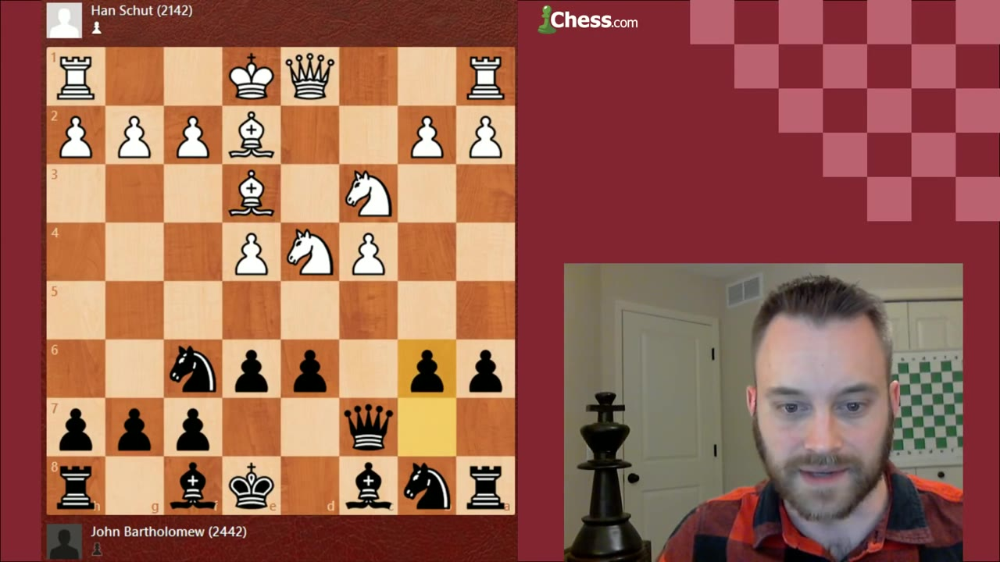
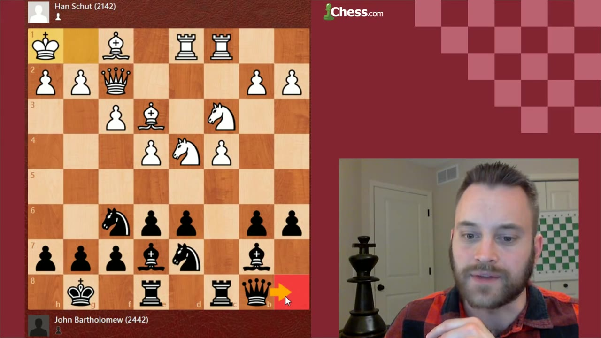
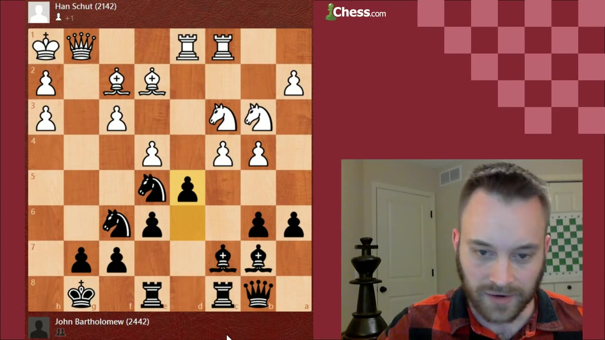
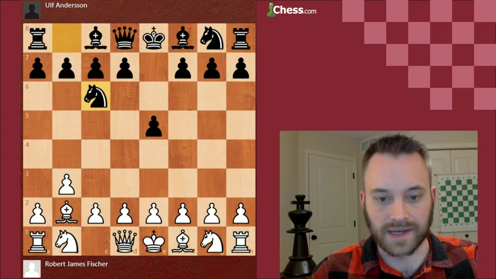
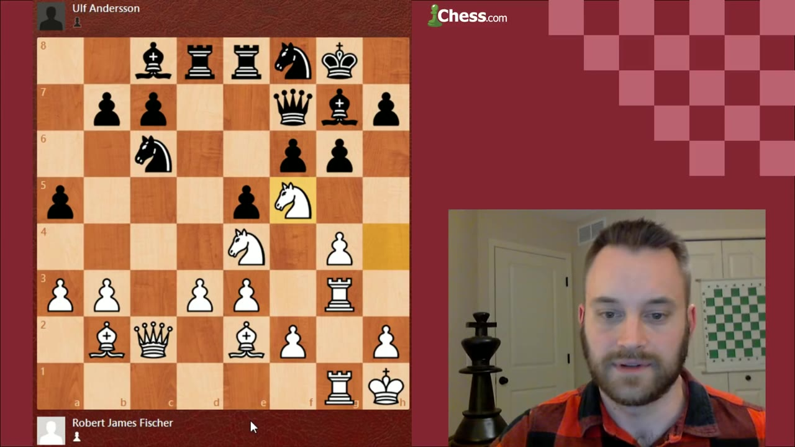
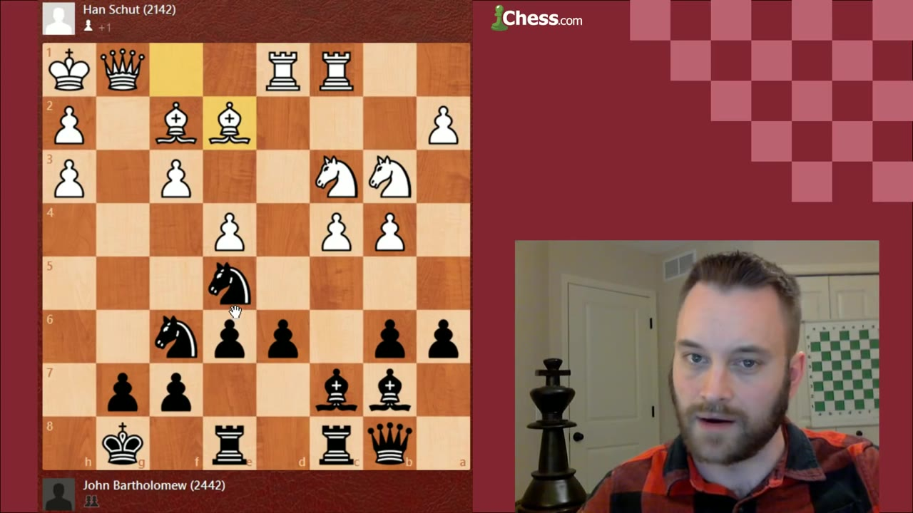

A complete walkthrough of the Hedgehog — one of chess's most dynamic counterattacking setups — from the pawns on the sixth rank to the devastating d5 break that unleashes it. Includes Fischer playing it as White, plus how White should fight back.
Watch on YouTubeThe Hedgehog is not an opening — it's a flexible pawn structure. Black sets up pawns on a6, b6, d6, e6, forming what GM Bartholomew calls "quills on a hedgehog" — spiky, controlling all the fifth-rank squares in front of them.

"If you think of these pawns as quills on a hedgehog, they are spiky — controlling all of this territory, preventing the enemy invaders from harassing you." — GM John Bartholomew
Even though a hedgehog looks purely defensive, it "does have a lot of fierce potential if you can harness that and utilize it and unleash it at the right time." The setup allows Black to absorb pressure, then strike back with devastating effect.
Where do Black's pieces go in this cramped setup?

"The Samish maneuver (named after Fritz Samish) — bishop d8, then c7 — adds enormous force to the eventual d5 break. It threatens the h2 pawn and gives your bishop a devastating diagonal once the position opens."
The queen on b8 isn't passive: it protects b6, eyes c4, and positions itself on the long diagonal for when the d5 break opens the line.
The d5 pawn push is the Hedgehog's defining moment. It's never just a trade — it's an unleashing. You sacrifice pawns to open your pieces and launch an attack.

"You're not playing d5 to swap everything off — you're playing it to unleash the potential of your pieces. Maybe sacrifice a pawn. In some cases, straight-up sacrifice for activity."
In his own game from the 2011 Manhattan Open, Bartholomew demonstrates this perfectly: down two pawns, he uses the opened e-file, his bishop on c7, and a knight on e5 to create unstoppable threats. His opponent, up material, had a loose king and doubled isolated pawns.
In a stunning reversal, Bobby Fischer — one of the greatest players in history — played the Hedgehog as White against Arne Andersen at the 1970 Zagreb Olympiad.

Fischer's plan was his signature: instead of the usual queenside play, he launched a kingside pawn storm:
"Fischer illustrates a plan synonymous with him — using a kingside pawn assault to crush the enemy king."
The result: Anderson's position collapsed under the weight of open files and White's bishop pair. Fischer won in style.

How should White combat the Hedgehog? GM Bartholomew shows his own loss to Scott Reester in the 2013 Minnesota State Championship, where Reester demonstrated the most effective anti-Hedgehog plan.

"Knight b3 is a very good multi-purpose move. It allows the queen and rook to pressure d6, the bishop to pester b6, and — most importantly — it sets up a4/a5 to support the knight jumping to a5."
The Knight b3 plan works because: - It creates immediate pressure on d6 (the Hedgehog's lifeline) - It supports the queenside pawn advance a4–a5 - After a4–a5, if Black takes, White's knight jumps to a5 with devastating effect - It makes the Samish maneuver much harder for Black to execute
"This plan has really put me off of this particular position. I haven't found a good solution from Black's point of view."
:::